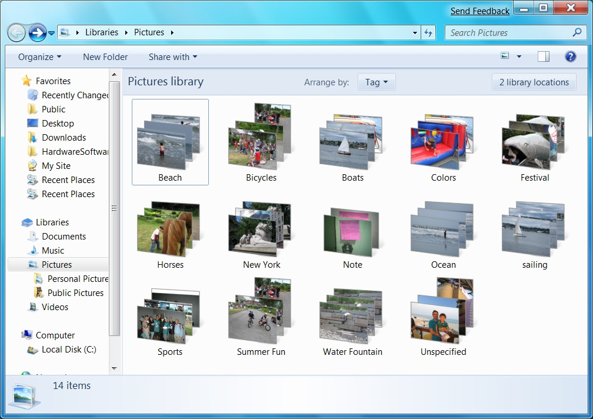
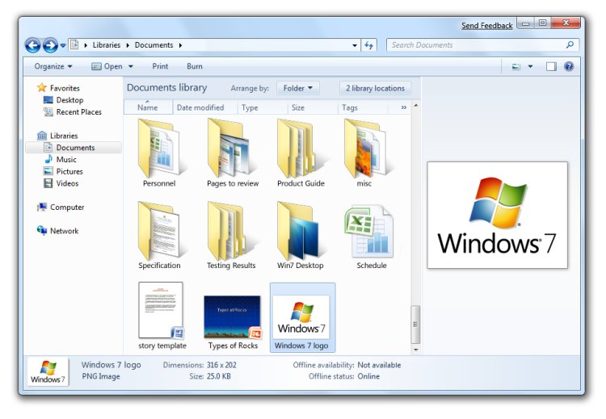

Users have easier access to files and data in Windows 7. New APIs make files and views more informative, enabling applications to deliver relevant and distinctive information to Windows Explorer. In addition, applications benefit from the new Libraries model, a useful, more abstract notion of user storage space than folders, and can also participate in common libraries of similar file types that are shared by different applications.
Windows 7 introduces the concept of Libraries as destinations where developers and end-users can find and organize their data as collections of items that can span multiple locations on the local computer as well as on remote computers.
The LibraryAPIs provide a straightforward way for developers to create applications that create, interact with, and support Libraries as first-class items within applications. Libraries can also be selected by using the folder picker dialog box. Applications can enumerate relevant library scopes, or they can use the library directly as a folder. (See Windows Libraries and Windows 7 Libraries: Developer Resources).

Pictures Library shows your pictures no matter where they are stored
In Windows 7, Windows Explorer makes file management and manipulation easier for the user in several ways:
By implementing all of the appropriate format handlers for the items returned from your protocol handler, search results from your custom data store can be as rich as search results from files. Libraries are automatically created for your protocol handlers so users can scope their searches easily. And the logic for creating Libraries can be easily customized through the registry. (See Developing Filters for Windows Search.)

In Windows 7, Windows Explorer makes file management and manipulation easier
Â
Â